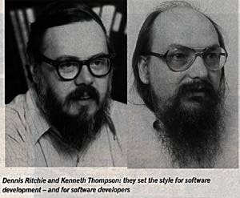

____ _ _ _ _
| _ \ | | | | | | (_)
| |_) | ___ | |_ ___ ___ ___ | | | |_ __ ___ __
| _ < / _ \| __/ _ \/ __/ _ \| | | | '_ \| \ \/ /
| |_) | (_) | || __/ (_| (_) | |__| | | | | |> <
|____/ \___/ \__\___|\___\___/ \____/|_| |_|_/_/\_\
...:::Ajudando povo Unix Like desde 2006:::...
www.bugsec.com.br
ATENÇÂO ESTE PAPER é BETA, ainda está em escrita
-------------------------------------------------------------------------------------------
INICIANDO em
____ __ _________
| | |__| ____ ____ __ _______ ____ ____ _____ \_ ___ \
| | | |/ \ / ___\| | \__ \ / ___\ / __ \ / \ / \ \/
| |___| | | \/ /_/ | | // __ \_/ /_/ X ___/| Y Y \ \ \____
|_______ \__|___| /\___ /|____/(____ /\___ / \___ |__|_| / \______ /
\/ \//_____/ \//_____/ \/ \/ \/
|##|
) (
( )
_) (_
| | , ,
|------| / GNU \
| GCC | ((__-^^-,-^^-__)) Autor: Antonio "Cooler_"
|~~~~~| |VODKA | `-_---' `---_-' Contato: c00f3r@gmail.com
`--,--' |------| `--|o` 'o|--' -----------+
| | | \ ` / \-\\
__|__ |______| ): :( \ / / \ \\
:o_o: / \ / | \\
"-" \ ------\ / /
|/ \| |/ \|
14/11/10 | | | |
() () () ()
Indice
==========
x00-Introdução a linguagem C
x01-Separando o material
x02-O que é um Compilador
x03-Iníciando em C
x04-int - interger - inteiro
x05-float - real
x06-Char - caracter - alfanumérico
x07-Ponteiro "Pointer"
x08-Casting
x09-Condições
x10-Estilos de programação até Aqui
x11-Loops em C laços com goto,while,do e for
x12-Arrays "Vetores,matrizes"
x13-Funções
x14-Usando Switch,break e continue
x15-Melhorando a Peformance
x16-Bibliografia
x17-Agradecimentos
aperte ctrl+f "x15" por exemplo caso queira ir direto ao capítulo 15
------------------------------------------------------
x00-Introdução a linguagem C
--------------------------
"Senta aí que lá vem história!!" - Ra Tim Bum - 1992
Linguagem C foi inventada em 1970 por Dennis Ritche, teve grande influência
do seu amigo Ken Thompson que criou a linguagem "B",ambos trabalharam na AT&T
Bell Labs,está foi uma época bem interessante Dennis Ritche e Ken thompson
fizeram um Unix em C,já tinham um Unix com assembly e tal porem não era portável,
se não me engano foi o "sistem V" o primeiro Unix a usar C,em fim nesta época
erá duro fazer um programa portável com Assembly.Em 1978, Brian Kernighan(que é
um dos criadores da linguagem AWK) e Dennis Ritchie publicaram a primeira edição
do livro The C Programming Language.Esse livro, conhecido pelos programadores
de C, como "K&R", serviu durante muitos anos como uma especificação informal da
linguagem. A versão da linguagem C que ele descreve é usualmente referida como
"K&R C".

Curiosidades:
*Em 1983, Dennis Ritche e Ken Thompson receberam o prémio Turing "pelo seu desenvol-
vimento de teoria de sistemas operativos genéricos e especialmente pela sua
implementação do sistema operativo UNIX."
A denominação do prêmio é homenagem a Alan Mathison Turing, um matemático britânico
considerado um dos pais da ciência da computação moderna. O prêmio é conhecido como
o "Prêmio Nobel da computação". É patrocinado pela Intel Corporation e acompanhado
atualmente por um prêmio monetário no valor de 250.000,00 USD (duzentos e cinquenta
mil dolares americanos).
*Também receberam premio nacional de tecnologia pelas mãos do presidente Bill Cliton
*Dennis Ritche Nascido em Bronxville, Nova Iorque, Ritchie formou-se em física e
matemática aplicada pela Universidade de Harvard.
*Ken thompson criou a codificação de caracteres UTF-8,construiu programas para jogar
xadrez contra o campeão do ramo Kasparov.
*Tanto Ken Thompson como Dennis Ritche tem um projeto com Rob Pike de sistema
Operacional chamado Plan9 e um sistema operacional hospedeiro chamado inferno
ambos são livres
*Em 1980, Bjarne Stroustrup do mesmo laboratório Bell Labs criou o C++ que seria
um "C + smalltalk" ou seja linguagem C com classes,C orientado a objetos,fui meio
infeliz nesta comparação que fiz, mesmo por que C++ é diferente de C ansi em vários
aspectos não vou discutilos aqui...
algumas refêrencias rápidas:
http://plan9.bell-labs.com/who/dmr/
http://plan9.bell-labs.com/who/ken/
http://c-faq.com/ansi/index.html
http://groups.google.com/group/comp.lang.c/
x01-Separando o material
--------------------------
O paper teve início com história da linguagem pois isso é muito importante
dá um mundo para o que vamos estudar,o que adianta estudar algo sem saber
de onde veio as cegas ? durante muito tempo eu aprendi as cegas na faculdade,
não desejo isso para nimguém...
em fim para continuar a ler este paper você deverá separar o seu "Tool Box"
para trabalhar com linguagem C,primeira coisa é usar um bom editor como VIM,
EMACS,gedit caso não queira nenhum desses tem o jedit entre outros,segundo
item seria ter um compilador eu pessoalmente uso o GCC sugiro o mesmo.
exemplo de instalação do compilador,editor de texto,desbuger em um Linux
baseado em GNU Debian...
apt-get install gcc g++ make gdb vim
exemplo em Linux baseado em Redhat
yum install gcc g++ make gdb vim
e assim vai gentoo use merge,arch pacman,slack installpkg etc...
caso use algum *BSD,MacOS ou OpenSolaris procure nos Ports dos mesmos
http://www.macports.org/
http://www.freebsd.org/ports/
http://gcc.gnu.org/
Maioriados Unix Like vem com GCC como default,a não ser que seja
minimalista de mais...
Caso você use windows gcc tem uma versão para Windows que se chama MinGW.
É a mesma instalada pelo ambiente Dev-C++ ou pelo CodeBlocks.
http://www.mingw.org/
http://www.codeblocks.org/
Quanto ao editor tendo um highlights(letras coloridas quando você
está editando o código) já da para quebrar o galho eu mesmo prefiro
o "VIM". terceiro ferramenta um desbugador,depurador o GDB já resolvi
isso,lembrando que o CodeBlocks já tem editor e debuger se não me engano...
instalado o GCC caso use Unix Like como Linux,BSD etc,de o comando
man gcc
assim você vai ver o manual do GCC caso use windows não fique triste
veja nos link
http://gcc.gnu.org/onlinedocs/gcc-4.5.0/gcc/
http://gcc.gnu.org/onlinedocs/gcc-4.5.0/gcc.pdf
não é para ler tudo de cara, mas deixe numa gaveta como referencia futura...
se você poder ter o livro do K&R ajuda também,outro bom livro como "C primer plus"
até mesmo "practical C". Estudar códigos de outros programadores ajuda seu
conhecimento na linguagem a subir exponencialmente.
x02-O que é um Compilador
-------------------------
Sendo curto e direto ao Ponto,Compilador ele pega o código escrito de alto nível
por um editor qualquer,compila através de automatos,geradores léxicos,condições
para execuções de certas funções para gerar o código de máquina...
se o scaner léxico acusar algo fora do padrão da linguagem então é retornada
uma saída de erro "syntax error before x bla bla..."
por exemplo uma linguagem X de programação, usa função "escreva()" para mostrar
uma saída,e todo fim de uma função nesta nossa linguagem tem que ter "string"
de ";"(ponto e virgula),exemplo prático:
escreva(ola mundo)
compilador vai ler letra por letra
[e][s][c][r][e][v][a][(][*][)][][][]...--> campos com espaços nulos
\ | | | | | / |
se for (escreva) verifica se tem ";"
mostre o que se não tiver retorna com erro
tem entre parentes
ao ver que o ultimo campo não tem ";" para finalizar vai retornar erro de
sintaxe, e irá parar tudo,caso a sintaxe esteja OK o compilador vai continuar
com sua tarefa,em outras palavras veja o desenho:
_______ ________
| | |01010101|
|code | |01010101|
| |------->> Compilador compila então --->> |10101010| <<---- Executa
| Ola! | |01010101| retorna saida
+-------+ +--------+ "Ola!"
Compilador pega código de alto nível e passa para baixo nível,ou seja nível
de máquina,tem muitas paradigmas das quais poderia falar aqui mas não é meu
objetivo explicar o grande paradoxo que tem dentro dos compiladores.
Se o programa faz referência a funcoes que estejam definidas em outros
arquivos objetos (como as bibliotecas padroes libc e glibc) entao o linka-
dor une tudo fazendo um executavel! Nosso programa está pronto.
caso queira saber mais os internals sugiro ler o "Dragon Book"
"Compilers: Principles, Techniques and Tools", 1986
tem este apelido por ter um dragão na capa, eu tenho este livro e acredite
eu li todo, infelizmente como não pratiquei todo o conteudo não fixou no meu
cérebro,eu estudei mais para ficar bom em parsers...
http://dragonbook.stanford.edu/
se você não saber resolver algoritmos de árvores,grafos nem perde seu tempo
lendo hehehe.Bom quem Domina ASSEMBLY e leu isso deve ter achado bobo mas
é apenas uma explicação para iniciantes...
x03-Iníciando em C
------------------------------------
Bom Primeira paradigma que devemos ter é que os códigos não vem do além,cada
função em linguagem C vem de uma "header","API" ou popularmente "biblioteca".
Primeira "Header" que vamos usar é a <stdio.h> que tem conformidade com ANSI
X3.159-1989 (‘‘ANSI C’’),siglas da "header" seria standard input/output library
traduzindo ai "biblioteca padrão de entrada e saida".Isso em um sistema Unix Like
você resolveria com comando "man stdio",caso não use um sistema Unix like ai
está alguns manuais.
http://www.manpagez.com/man/3/stdio/ man em EN
http://man.gnusquad.org/stdio/section-3/pt/ man em PT
Com esta "header" que vamos pegar entrada do usuário com nossos programas usando
função "scanf",saída vamos usar a função "printf".
vamos a um "hello world" parece que todo paper de programação tem isso he he
---------------------------code
main() {
puts("ola");
}
---------------------------EOF
por que "main() { code }" ?
"main()" nada mais é que uma função,no caso é a primeira função que C lê
como padrão...
escreva o código num paper txt, e renomeio para extensão ".c"
veja seguencia de comando que mandei no terminal
vim programa.c <---usei o vim para escrever o código no arquivo "programa.c"
gcc programa.c -o programa <--- compilei com GCC e usei argumento "-o" para apontar a saida
./programa
teve como saida a palavra "ola"
a função "puts()" não vem de uma "header" repare que não apontamos para nenhuma
ou seja não usamos <stdio.h>.caso use windows use uma "IDE" como dev C++ ou codeblocks
nos menus dele tem opção de compilar e executar,"\n" dentro dos parenteses seria
comando "new line" par apular uma linha depois da "string".
Nosso exemplo foi muito minimalista,vamos trabalhar com saídas só que usando
a função "printf()" e proveitando para explicar variáveis,expressões aritméticas e
funções.Bom agora sim vamos usar <stdio.h> para apontar para ela vamos usar
#include "stdio.h"
ou
#include <stdio.h>
vamos a um exemplo
---------------------------code
#include <stdio.h>
/* isso é um comentario */
int main() {
//outra forma de comentar
// veja função "printf"
printf("ola\n");
return 0;
}
---------------------------EOF
veja a função "main()" agora é um "int" ou seja inteiro
precisa retornar algo no fim da função então justifica no final "return 0;"
O pre-processador remove comentários do programa que seria iniciados com "//" ou
"/* conteudo */",interpreta diretivas especiais do pre-processador. Estas
diretivas sao iniciadas por # que pode ser um apontador para header ou macros
exemplo de macro
diretiva #define que eh assim:
#define MAX_SIZE 100
Faz uma substituicao completa por todo arquivo trocando MAX por 100.
---------------------------code
#include <stdio.h>
#define MAX 100
int main() {
printf("numero %d \n", MAX);
return 0;
}
---------------------------EOF
Explanação de o que ocorreu dentro da função "printf()"
pula
linha número inteiro
| /
printf("string %d \n", 21);
| |
texto \
qualquer argumento que define
tipo de variável
no caso número inteiro
integer "int"
então usamos "%d"
d = decimal
Só pro curiosidade algumas sequencias de escape:
\a (alert) -> Produz um alerta visivel ou audivel.
\b (backspace) -> Muda a posicao atual 1 caractere antes.
\f (form feed) -> Move a posicao atual para o inicio da proxima pagina.
\n (new line) -> Move a posicao atual p/ posicao inicial da proxima linha.
\r (carriage return) -> Move a posicao atual p/ a posicao inicial da linha.
\t (horizontal tab) -> Move a posicao atual p/ a proxima posicao de tabulacao definida na linha.
\v (vertical tab) -> Move a posicao atual p/ a proxima posicao de tabulacao vertical definida.
x04-int - interger - inteiro
---------------------------
variavel inteira é aquela que assume valores inteiros.
O tipo basico para um inteiro é "int", ou seja, declaramos um inteiro
assim:
int x;
ou
long int x;
O valor de um inteiro assim declarado é um inteiro de 32bits ou seja,
pode ir de -2147483648 a 2147483647. Inteiros de 16 bits ainda podem ser
declarados, bastando anexar a palavra short antes de int:
short int x;
ou
short x;
Isso faz com que x varie de -32768 a 32767. Um inteiro pode ser
declarado para ser positivo apenas, bastando colocar a palavra
unsigned (sem sinal), então temos:
unsigned shor int x;
seria uma declaracao no qual os valores de x podem ir de 0 a 65535 (2^16-1)..
unsigned long int z;
seria uma declaracao no qual os valores de z podem ir de 0 a 4294967297 (2^32 - 1).
Segue aqui uma tabela com os principais tipos de declaradores para inteiros:
+---------------------+--------------------+
| 16 bit | 32 bits |
|---------------------|--------------------|
| short | long |
| short int | long int |
| unsigned short int | unsigned long int |
| signed short int | signed long int |
| | unsigned int |
| | signed int |
+---------------------+--------------------+
veja por si
---------------- Code
#include <stdio.h>
int main() {
printf("The 'int' data type is\t\t %d bytes\n", sizeof(int));
printf("The 'unsigned int' data type is\t %d bytes\n", sizeof(unsigned int));
printf("The 'short int' data type is\t %d bytes\n", sizeof(short int));
printf("The 'long int' data type is\t %d bytes\n", sizeof(long int));
printf("The 'long long int' data type is %d bytes\n", sizeof(long long int));
printf("The 'float' data type is\t %d bytes\n", sizeof(float));
printf("The 'char' data type is\t\t %d bytes\n", sizeof(char));
return 0;
}
---------------- EOF
Os operadores aritmeticos servem para realizar operacoes aritmeticas, ou
seja, aquelas que envolvem as operacoes basicas que aprendemos logo nos
primeiros anos da escola: soma, subtracao, multiplicacao e divisao. As
expressoes sao do tipo (membro1 operador membro2) e o valor retornado pela
expressao eh exatamente o resultado da operacao.vamos a um exemplo usando
expressões aritméticas conforme a tabela.
+---------------------------------------------------------------------------+
| Adição | Subtração | Multiplicacao | Divisão | Resto de Divisão |
|--------------------------------------------------------|------------------|
| (a + b) | (a - b) | (a * b) | (a / b) | ( A % B ) |
+--------------------------------------------'-----------'------------------+
exemplo apenas atribuição de valores em variáveis
---------------------------code
#include <stdio.h>
int main() {
//declaramos variáveis
int x,y,z;
//setamos valor nas váriaveis
x=2,y=3,z=5;
printf("escolhidos %d %d %d \n", x, ,y ,z);
return 0;
}
---------------------------EOF
repare que usamos "," virgula para separar a atribuição das variáveis
podiamos usar também;
x=2;
y=3;
z=5;
vamos exemplo com atribuição e uso de operadores aritméticos
---------------------------code
#include <stdio.h>
int main() {
//declaramos variáveis
int x,y,z;
//setamos valor nas váriaveis
x=2+2;
y=3-2;
z=5*2/2;
printf("resultado de x,y e z é %d %d %d \n", x, y, z);
return 0;
}
---------------------------EOF
Podemos atribuir uma váriavel dentro da outra desde que seja do mesmo tipo
exemplo
---------------------------code
#include <stdio.h>
int main() {
//declaramos variáveis
int x,y,z;
//setamos valor nas váriaveis
x=2;
y=3;
z=x+y;
printf("resultado de z é %d \n", z);
return 0;
}
---------------------------EOF
podemos usar notação pósfixa para atribuir um valor exemplo invés de
fazer
x=x+1;
podemos fazer
x+=1;
ou x++
para atribuição de valor "1" podemos fazer até x++;
vou dar um exemplo prático e pesado para estudo, tente entender o que
cada linha faz...
---------------------------code
#include <stdio.h>
int main() {
//declaramos variáveis
int x,y,z;
//setamos valor nas váriaveis
x=2;
y=3;
z=5;
z+=(x+y); // isso vale como z=z+(x+y)
printf("resultado 1 de z é %d \n", z);
z++; // equivale a z=z+1
z++;
printf("resultado 2 de z é %d \n", z);
z*=2; // z=z*z
printf("resultado 3 de z é %d \n", z);
z%=12;
printf("resultado 4 do resto da divisao de 24 por 12 de z é %d \n", z);
z=13;
z+=x++ + ++y; // ou seja z=z+(x+1)+(y-1)
printf("resultado 5 de z é %d \n", z);
z-=1; // valia 19 agora vale 18
z-=12 + x++; // ou seja z=z-(12+(x+1))
printf("resultado 6 de z é %d \n", z);
z=20; //agora z vale 20
z+=y-- + --x; // z=z+(y-1)+(-x)
printf("resultado 7 de z é %d \n", z);
z=20; //z agora vale 20
z+=(((20/5)+(1-1))*3)/x; // isso vale z=z+( (((20/5)+(1-1))*3) /x )
printf("resultado 7 de z é %d \n", z);
return 0;
}
---------------------------EOF
acho que com este ultimo exemplo deu para explanar operadores aritméticos
com variáveis inteiras,agora mudando de assunto porem dentro do tópico "int"
Em resumo os tipos de declarações de "int"
* int, pode possuir 16 bits, 32 bits ou 64 bits
* short int, deve possuir tamanho de no mínimo 16 bits e não pode ser maior que int
* long int, deve possuir tamanho mínimo de 32 bits
* long long int, deve possuir tamanho mínimo de 64 bits
Todos estes tipos de inteiros podem ainda ser declarados precedidos da cláusula unsigned,
o que faz com que só suporte números positivos. Isto faz com que, com o mesmo tamanho, uma
variável suporte mais números positivos do que um signed (todos os inteiros são signed por
omissão).
como eu sei quantidade de Bits de uma variável ?
usamos função "sizeof()" para determinar o tamanho de uma variavel, tipo ou
constante. O valor retornado é em bytes.
---------------------------code
#include <stdio.h>
int main() {
int x;
x = sizeof(int);
printf("bytes de x é %d , tem total de %d bits\n", x, x*8);
return 0;
}
---------------------------EOF
Acima, o valor de x será 4, ou 4 bytes, que dah 32bits, ou seja, x é um
inteiro de 32 bits.
antes de partir para float só mais um exemplo,desta ves um programa
que mostra alguns dos argumentos na função "printf()" são eles "%d"
que já usamos que seria para decimal,"%o" para octal, "%x" hexadecimal
---------------------------code
#include <stdio.h>
int main(void)
{
int x = 100;
printf("dec = %d; octal = %o; hex = %x\n", x, x, x);
return 0;
}
---------------------------EOF
rode o programa e tente entender...
x05-float
------------
Uma variavel racional,real(ponto flutuante) é aquela que assume valores
racionais.
Podemos declarar assim:
float x;
ou
double y2;
Na primeira declaracao, temos x um ponto flutuante de precisao simples,
e xy um ponto flutuante de precisao dupla, ou seja, x pode ter
mais casas decimais do que y. Voce tambem pode usar unsigned, long e
short para float:
unsigned float z;
+----------------+-----------------+
| float | double |
| short float | short double |
| long float | long double |
| unsigned float | unsigned double |
| signed float | signed double |
+----------------+-----------------+
vamos a um exemplo de uso em um probleminha de porcentagem
Um produto, cujo valor original era de R$ 250,00, teve um desconto de 10%.
Qual foi seu valor final da compra?
---------------------------code
#include <stdio.h>
int main() {
float valor,percentual,total;
valor = 250.00;
percentual = 10.0 / 100.0;
total = valor - (percentual * valor);
printf("O valor final é %.2f \n", total);
return 0;
}
---------------------------EOF
Só uma explicação rápida do que ocorreu na função "printf()"
printf("O valor final é %.2f \n", total);
| |
string |_usamos argumento "%f" para float
qualquer ".2" seria para indentificar
quantos zeros antes do "ponto"
se você usar "%.3f" então vai
ter "225.000" invés de "225.00"
Mistério Descobrido !
Scooby Scooby Doooooo AhUHAuHAHAU !
x06-Char - caracter - alfanumérico
---------------------------------
O tipo char ocupa 1 byte, e serve para armazenar caracteres ou inteiros.
Isso significa que o programa reserva um espaço de 8 bits na memória RAM
ou em registradores do processador para armazenar um valor (char de tamanho
maior que 8 bits é permitido pela linguagem, mas os casos são raros). Com
vetores do tipo char é possível criar cadeias de caracteres (strings).
Um caractere em ASCII - American Standart Code for Information
Interchange, tem um valor que varia de 0 a 255. Ou seja, quando voce declara
um caractere, voce estah na verdade declarando um inteiro de 0 a 255.
char letra;
É importante voce saber boa parte da tabela ASCII, principalmente se voce
quer lidar com baixo nivel. O seguinte programa em C exibe a tabela
para voce:
---------------------------Code
#include <stdio.h>
int main() {
unsigned char i;
for (i=0;i<255;++i)
// %c argumento para definir apenas um char
printf("%d -> %c\n",i,i);
return 0;
}
---------------------------EOF
Por exemplo, a letra A (maiusculo) tem o valor 65. Assim, apos
declarado a variavel
unsigned char c;
voce poderia ter feito..
c = 'A';
ou
c = 65;
pois o resultado seria o mesmo.
Strings ficam interessantes mesmo com vetores "arrays",não é legal eu
falar disso agora,Mas vou tentar,um "Array" nada mais é que uma lista
em linguagem C podemos definir por "[]" e dentro vai o número da quantidades
de elementos do "Array",por exemplo "[4]" então é um "array" de 5 elementos
[0][1][2][3][4] isso por que contamos apartir do ZERO
vamos um exemplo prático
---------------------------Code
#include <stdio.h>
#define frase "olhe que legal estou vivo!"
int main() {
char name[10];
printf("qual seu nome?\n");
scanf("%s", name);
// s = string
printf("Ola, %s. %s\n", name, frase);
return 0;
}
---------------------------EOF
%s = seria o argumento para definir um conjunto de caracteres
usamos uma função nova até aqui o "scanf()" que serve para pegar
entradas "stdin" ou seja entradas do teclado.programa mostra como
saida "qual seu nome?" então o cliente vai digita o nome,então
o programa retorna a saída "ola Fulano , olhe que legal"...
só para discutir aqui, está forma de pegar string de entrada não
é a melhor forma, memso pro que alguns compiladores podem retornar
algum BUG,veja o por que
array name[15]
[c][h][u][c][k][][n][o][r][r][i][s][\0][][]
| |-> null caracter
|-usuário digita nome dele chuck norris
o problema é que alguns compiladores faz
array name[15]
[c][h][u][c][k][][n][o][r][r][i][s][\0][\n][] e "\n" na próxima entrada
| |-> null caracter
|-usuário digita nome dele chuck norris
isso acaba bugando seu programa então tem que fazer uma gambiarra
usando "getchar()"
scanf("%s", ola); getchar();
assim pegando \0\n que tem a mais...
só uma curiosidade se você quiser mostrar somente uma letra da palavra
pasta mostrar sua posição exemplo,"chuck norris" se pegarmos o terceiro
caracter "u", então teriamos
[c][h][u][c][k]....
0 1 2 3 4 <--- número da posição dos elementos do "array"
então
printf("%c", var[2]);
isso não é nada elegante,então baseada na idéia de um amigo o "m0nad" fiz
uma macro para resolver o problema, na versão do m0nad seria uma função chamada
"chomp" com influências na linguagem interpretada Perl.
---------------------------Code
#include <stdio.h>
#include <string.h>
#define ReadString(a) fgets(a,sizeof(a),stdin),a[strlen(a)-1] = '\0';
int main() {
char teste[10];
printf("seu nome\n");
ReadString(teste);
printf("voce escreveu %s\n",teste);
return 0;
}
---------------------------EOF
vamos lapidar a nossa macro "ReadString"
fgets(var,sizeof(var),stdin); <-- usamos para ler a entrada stdin
var[strlen(var)-1] = '\0'; <-- usamos para deletar "\0" e assim não bugar
a função "strlen()" esta inclusa na header <string.h> isso justifica o uso
da header,lembrando que nesta header tem muitas funções legais de strings
como exemplo você deseja concatenar strings. usamos função "strcat"
---------------------------Code
#include <stdio.h>
#include <string.h>
#define ReadString(a) fgets(a,sizeof(a),stdin),a[strlen(a)-1] = '\0';
int main() {
char animal[10], animal2[10], soma[30];
printf("nome de um animal \n");
ReadString(animal);
printf("nome de um animal \n");
ReadString(animal2);
strcat(soma,animal); //soma+=animal...
strcat(soma," e o animal ");
strcat(soma,animal2);
printf("string concatenada %s \n", soma);
return 0;
}
---------------------------EOF
caso use um "unix like" de o comando num terminal "man string" para ver o manual
da <string.h> caso não visite
http://www.manpagez.com/man/3/string/
x07-Ponteiro "Pointer"
--------------------
É uma variável que aponta para uma determinada area da memória,seu valor é o
endereço da memória que geralmente é um inteiro hexadecimal,Chamamos de apontador
porque podemos utilizar o operador unario "*" para acessar ao valor da memoria
que o nosso ponteiro armazena.Interessante saber que para um inteiro, o valor nulo
é 0, para um float, é 0.0, para um char, é '\0', mas e para um ponteiro? Nesse caso é
NULL. exemplo;
---------------------------Code
#include <stdio.h>
int main() {
int x ,*y;
printf("digite um número\n");
scanf("%d", &x);
/*
"&" seria um operador unario utilizado junto a variáveis para
determinar o endereço de memoria onde estao armazenadas
*/
y=&x;
printf("y vale %d \n", *y);
printf(" endereço da memória de y é %x \n", y);
return 0;
}
---------------------------EOF
x08-Casting
--------------------
Seria converter uma variável de um tipo para outro tipo
exemplo:
---------------------------Code
//1
int index = 1;
float var = 0.0;
index = (int)var;
//2
char c = ’A’;
int x = (int)c;
//3
int x;
//printando de "A" até "Z"
for(x=97; x<=122; x++)
printf(" %c ", (char)x);
//4
int x=7, y=5;
float z;
z = (float)x/(float)y;
//5
int x = 13;
printf("x/2 is %f", (float)x / 2);
---------------------------EOF
x09-Condições
-------------------
IF-ELSE
if-else é um controlador do fluxo com o qual podemos fazer com que
um bloco de comandos seja executado se uma dada condicao for correta, e
tambem pode fazer com que um bloco de comandos alternativo seja executado
caso a condicao seja não correta.
A sintaxe é:
if (expressao)
comando1
else
comando2
exemplo
---------------------------Code
#include <stdio.h>
int main() {
int x ,y;
printf("digite um número para x\n");
scanf("%d", &x);
printf("digite um número para y\n");
scanf("%d", &y);
if(xy);
printf("%d",z);
return 0;
}
---------------------------EOF
podemos usar agrupar um conjunto de comandos com "{ }" chaves
exemplo:
dado o problema que é necessario pegar duas entradas do usuário
inteiras,verificar se são iguais,se forem iguais então a primeira
entrada deverá receber adição de 1,caso a segunda entrada seja
menor ou igual a primeira então a segunda entrada recebera o produto
de 2.
---------------------------Code
#include <stdio.h>
int main() {
int x ,y;
printf("digite um número para x\n");
scanf("%d", &x);
printf("digite um número para y\n");
scanf("%d", &y);
if(x==y)
{
printf("x é igual a y \n");
printf("x vai receber adição de um numero \n");
x++;
}
if(y<=x)
{
printf("y é menor ou igual a x\n");
y*=2;
}
/* Por fim mostramos o valor das duas entradas */
printf("x = %d , y = %d\n", x,y);
return 0;
}
---------------------------EOF
até aqui está fácil de mais, vamos usar agora operadores "&&" and,"||" or
Operadores Logicos AND e OR (E e OU)
,---,---,--------,
| a | b | a && b |
|---|---|--------|
| 0 | 0 | 0 |
| 0 | 1 | 0 |
| 1 | 0 | 0 |
| 1 | 1 | 1 |
'---'---'--------'
Assim, a expressão (x < y) && (z >= x) sera 1 se e somente se x for menor
que y e, simultaneamente, z for maior ou igual a x. Ou seja, se ambas as
expressões forem verdadeiras.
O operador OU eh caracterizado pela seguinte tabela verdade:
,---,---,--------,
| a | b | a || b |
|---|---|--------|
| 0 | 0 | 0 |
| 0 | 1 | 1 |
| 1 | 0 | 1 |
| 1 | 1 | 1 |
'---'---'--------'
Assim, a expressao (x < y) || (x < z) serah 1 se e somente se pelo menos uma
das expressoes for verdadeira. Sera 0 se e somente se ambas forem falsas.
temos também operador "XOR" representado pro "^"
,---,---,--------,
| a | b | a ^ b |
|---|---|--------|
| 0 | 0 | 0 |
| 0 | 1 | 1 |
| 1 | 0 | 1 |
| 1 | 1 | 0 |
'---'---'--------'
Muito usado para fazer SWAP
A B C
| | | | | |
|~~~~~| |~~~~~| | |
| | | | | |
| | | | | |
+-----+ +-----+ +-----+
Na lógica imaginamos como se fosse 3 copos sendo dois cheios e um vazio
para fazer a troca entre A e B,nada impossível com terceiro copo "c=b; b=a; a=c;"
E se só tive-se copo "A" e "B" ?
Tem uma forma diferente usando XOR "^", para usar swap
mas desta vez descarto esta forma, que em elementos comuns com INT seria
int a = 10;
int b = 20;
a = a ^ b:
b = a ^ b;
a = a ^ b;
Temos também operador "!" negação seria NOT ou seja
if(x==0)
x+=2;
podemos fazer
if(!x)
x+=2;
seria equivalente
pode-se fazer um xor usando NOT
!a != !b;
vamos a um problema
pegue 3 entradas de um usuário qualquer,sabendo que as 3 entradas
são números inteiros,então avise se as 3 entradas forem iguais e
primeira entrada devera receber como adição ao seu valor a segunda entrada e a
terceira entrada, se a primeira entrada for Igual ou maior que a terceira
"ou" se terceira entrada for igual ou maior que a primeira então
mostre o produto dos dois com subtração de "2",caso a primeira,segunda
entrada e a terceira não seja teclada avise para o usuário para teclar
um número inteiro e que o mesmo não pode ser zero.
---------------------------Code
#include <stdio.h>
int main() {
int x ,y ,z;
printf("digite um número para x\n");
scanf("%d", &x);
printf("digite um número para y\n");
scanf("%d", &y);
printf("digite um número para z\n");
scanf("%d", &z);
if( (x==y) && (x==z) )
printf("3 entradas iguais\n adição delas é %d\n", x+=y+z);
if( (x>=z) || (z>=x) )
printf("produto de x com z com subtração de 2 é %d \n", ((x*z)-2) );
if( (!x) && (!y) && (!z) )
printf("tecle um número inteiro ,não pode ser zero\n");
return 0;
}
---------------------------EOF
bom isso foi uma forma simples e direta de resolver o nosso problema
tem outra forma mudando o estilo de programar veja só
---------------------------Code
#include <stdio.h>
int main() {
int x ,y ,z,var;
printf("digite um número para x\n");
scanf("%d", &x);
printf("digite um número para y\n");
scanf("%d", &y);
printf("digite um número para z\n");
scanf("%d", &z);
if( (x==y) && (x==z) )
{
x+=y+z;
printf("3 entradas iguais\n adição delas é %d\n", x);
}
if( (x>=z) || (z>=x) ) {
var=((x*z)-2);
printf("produto de x com z com subtração de 2 é %d \n", var );
}
if( (!x) && (!y) && (!z) )
printf("tecle um número inteiro ,não pode ser zero\n");
return 0;
}
---------------------------EOF
último exemplo,faça um programa que pegue duas entradas e veja se as
mesmas são impar ou par, caso seja par mostre seu valor, caso seja impar
mostre com adição de "1"
---------------------------Code
#include <stdio.h>
int main() {
int x ,y;
printf("digite um número para x\n");
scanf("%d", &x);
printf("digite um número para y\n");
scanf("%d", &y);
if(!(2%x))
printf("x é par seu valor é %d \n", x);
else
printf("x é impar seu valor é %d, adição é %d\n", x, x++);
if(!(2%y))
printf("y é par seu valor é %d \n", y);
else
printf("y é impar seu valor é %d, adição é %d\n", y, y++);
return 0;
}
---------------------------EOF
hehehe não foi visualmente claro ?
isso
if(!(2%x))
printf("x é par seu valor é %d \n", x);
else
printf("x é impar seu valor é %d, adição é %d\n", x, x++);
equivalente a isso
if((2%x)==0)
printf...
else
printf...
dentro da condição você pode resolver problemas aritméticos
sim e é divertido :)
invés de ler (2%x) o interpretador resolve o que esta entre parenteses
por exemplo se x vale 6 então resto da divisão seria 0 então (0==0)
em fim você pode fazer N soluções com isso...
não tem só if e else no C também temos "else if"
podemos usar como exemplo, se uma condição não for verdadeira e for de acordo com expressão dentro
do parenteses então faça...
if(exp)
{
codes
}
else if(exp)
{
code
}
também temos condições ternárias usando "?" e ":" ou seja
isso
if(x==2)
x=0;
else
x++;
podemos passar para expressão ternária e ficando
x=(x==2)?0:++x;
ou seja
var=(expressão de condição)? se for exp : se não for exp ;
teria o resultado equivalente ao usar o "if" e "else"
podemos no "printf" e em outras funções como exemplo
---------------------------Code
#include <stdio.h>
int main() {
int x,y;
printf("digite um número para x\n");
scanf("%d", &x);
printf("digite um número para y\n");
scanf("%d", &y);
printf("maior das duas entradas é %d \n", (x>y)?x:y );
return 0;
}
---------------------------EOF
tem um pessoal que abusa de expressão ternária, fazendo o código
ser chato para ser lido e interpretado por um outro programador
isso seria uma prática ruim de ser feita,veja só que bizarro
---------------------------Code
#include <stdio.h>
int main() {
int x,y;
printf("digite um número para x\n");
scanf("%d", &x);
printf("digite um número para y\n");
scanf("%d", &y);
printf("maior das duas entradas %d \n", (x>y)?(x>10)?(x+5)/3:++x:(!((y-2)/2))?0:666 );
return 0;
}
---------------------------EOF
Achou o código muito espartano?
vou explicar a expressão ternária aqui passada
(x>y)?(x>10)?(x+5)/3:++x:(!((y-2)/2))?0:666
equivale ao código:
if(x>y)
{
if(x>10)
return ((x+5)/3)
else
return ++x
}
else if( ((y-2)/2) == 0 )
{
return 0;
}
else
{
return 666;
}
x10-Estilos de programação até Aqui
----------------------------------
alguns programadores em C do IRC no servidor da freenode fazem competição
para ver quem resolve um algoritmo em menas linhas usando,expressão ternária
e outras funções da linguagem, só não vale usar shellcode rsrs...
Tem um pessoal "Noob" de programação de alto nível,que se racha de dar risada
quando escuta falando que linguagem C tem um estilo,em C você tem N formas de
se fazer a mesma coisa,claro que algumas formas vão ser mais rápidas que outras
e algumas vão ser visualmente ruim de se ler o código mas em fim veja só os
exemplos,todos tem a função igual
-----------------------------------------
método ousado de usar "," para evitar chaves "{}"
eu já vi muitos códigos "l33t" do povo underground assim
pessoalmente não gosto de ver isso
if(x>y,++x,y+=3*2)
printf("result %d \n", x);
else
x=0,y=0;
-----------------------------------------
método evitando "{}" chaves e usando ","
if(x>y)
++x,y+=3*2,printf("result %d \n", x);
else
x=0,y=0;
-----------------------------------------
método GNU, o mais popular e correto no meio acadêmico
e profissional,também tem outras possíbilidades...
if(x>y)
{
++x;
y+=3*2;
printf("result %d \n", x);
} else {
x=0;
y=0;
}
-----------------------------------------
usando exp ternária
x=(x>y)?++x:0;
x=(x>y)?y+=3*2:0;
ou forma bizzara :D
x=(x>y)?++x:0,x=(x>y)?y+=3*2:0;
ou usando "and" invés de ","
x=(x>y)?++x:0&x=(x>y)?y+=3*2:0;
-----------------------------------------
provavelmente se outro programador em linguagem C ver estes exemplos
que segue a mesma forma de se fazer a mesma coisa,teria uma forma diferente
de resolver o mesmo. que como falei cada um segue uma paradigma definida para
sí próprio, por exemplo se você quer participar de um projeto de software livre
exemplo o "Firefox",para garantir uma certa aprovação da equipe você teria
que ter que mostrar ser útil e seguir o mesmo estilo da programação do projeto
,firefox se não me engano usa padrão GNU...
se o projeto foi feito de forma porca sem um paradigma definida,você vai ouvir
coisas do tipo,"faz o seu ai,se funcionar beleza!",ou seja tanto faz o estilo
usado se está tudo sem documentação, se o código está tudo numa linha etc...
x11-Loops em C laços com goto,while,do e for
-----------------------------------------------
Em ASSEMBLY quando precisamos fazer alguma repetição,seja uma sequencia temos que usar
"JUMP", instrução "JMP", com uma certa condição em linguagem C poderiamos usar GOTO
para realizar o feito vejamos
goto.c
---------------------------- code
main()
{
int x=0;
// esta word "jump" poderia ser qualquer coisa como ex INICIO:
JUMP:
x++;
puts("olha só");
if(x<=9) goto JUMP;
}
---------------------------- EOF
este programa é simples ele imprime 10 vezes "olha só"
entendendo o ASSEMBLY em conjunto com GDB
"Espada Justiceira, dê-me a visão além do alcance!" - Thundercats
-usamos argumento "-g" para poder usarmos o GDB depois
cooler@malloc:~/c$ gcc -g -o goto goto.c
cooler@malloc:~/c$ gdb goto
GNU gdb 6.8-debian
Copyright (C) 2008 Free Software Foundation, Inc.
License GPLv3+: GNU GPL version 3 or later
This is free software: you are free to change and redistribute it.
There is NO WARRANTY, to the extent permitted by law. Type "show copying"
and "show warranty" for details.
This GDB was configured as "i486-linux-gnu"...
(gdb) disass main
Dump of assembler code for function main:
0x080483a4 <main+0>: lea 0x4(%esp),%ecx
0x080483a8 <main+4>: and $0xfffffff0,%esp
0x080483ab <main+7>: pushl -0x4(%ecx)
0x080483ae <main+10>: push %ebp
0x080483af <main+11>: mov %esp,%ebp
0x080483b1 <main+13>: push %ecx
0x080483b2 <main+14>: sub $0x24,%esp
0x080483b5 <main+17>: movl $0x0,-0x8(%ebp)
0x080483bc <main+24>: addl $0x1,-0x8(%ebp) nossa var X recebe +1
0x080483c0 <main+28>: movl $0x80484a0,(%esp)
0x080483c7 <main+35>: call 0x80482d4 chamando função puts na libc
0x080483cc <main+40>: cmpl $0x9,-0x8(%ebp)
0x080483d0 <main+44>: jle 0x80483bc <main+24>jump main 24 if x less or equal 9
0x080483d2 <main+46>: add $0x24,%esp
0x080483d5 <main+49>: pop %ecx
0x080483d6 <main+50>: pop %ebp
0x080483d7 <main+51>: lea -0x4(%ecx),%esp
0x080483da <main+54>: ret
este exemplo foi bem direto
agora que você entendeu GOTO,vou explicar o "while"
bom o "while" é muito mais fácil que o GOTO, porem quando você disassembla
vê que acaba gerando mais código portanto GOTO é mais leve, porém código
cheio de GOTO é considerado má prática.vamos exemplo do "while","do while"
e "for".
exemplo é simples vamos mostrar na tela 10 vezes "ola cara"
de várias formas diferentes
---------------------------- code
// usando while
main()
{
int x=0;
while(x<9) puts("ola cara"),x++;
}
//veja que você também pode usar chaves {}
main()
{
int x=0;
while(x<9)
{
puts("ola cara")
x++;
}
}
// usando DO WHILE
main() {
int x=0;
do
puts("ola cara"),x++;
while(x<=9);
}
main() {
int x=0;
do
{
puts("ola cara");
x++;
}while(x<=9);
}
// dois exemplos usando for
main() {
int x;
for(x=0; x<=9; x++) puts("ola cara");
}
main() {
int x;
for(x=0; x<=9; x++)
{
puts("ola cara");
}
}
---------------------------- EOF
você pode ver que dentro do while(), tem uma exp de condição
quando aquela condição for verdadeira termina o loop,no caso do "for()"
fica no meio exemplo "for(x=0; x>3; x--)" bom chega de exemplos
fáceis vamos botar sua cabeça no fogo...
Melhor lugar para treinar lógica de programação é o project Euler seria
um site onde se encontra vários desafios matemáticos que podem ser resolvidos
e devem usando programação.no proóprio site tem um forum com algumas respostas
nas mais diversas linguagens de programação a la Lisp,haskel,python...
http://projecteuler.net
exemplo de desafio e solução para o mesmo
problema número 1
Add all the natural numbers below one thousand that are multiples of 3 or 5.
tradução rápida ;
mostre toda a soma dos numeros naturais até 1000 dos números multiplos de 3 e 5.
vou dar duas respostas diferentes porem chega na mesma lógica
---------------------------- Code
#include <stdio.h>
main()
{
int x,y;
for(x=1,y=0; x<1000; x++,y+=((!(x%3))||(!(x%5)))?x:NULL);
printf("%d\n",y);
}
//melhorando o código, outro exemplo
#include <stdio.h>
main()
{
int x=0,y=0;
for(X=1; X<1000; X++)
{
// para saber se um número é multiplo dividimos
// vemos o resto se for zero é multiplo
// usamos NOT "!" para ficar equivalente a ((x%3)==0)
if( (!(x%3)) || (!(x%5)) )
// var y recebe ela mesma mais o numero multiplo por 3 ou 5
y+=x;
}
printf("%d\n",y);
}
---------------------------- EOF
já penso em fazer isso com o lapiz hehehe
bom primeiro desafio da lista sempre é o mais fácil apartir do oitavo
desafio, ai sim você vai queimar a cabeça vai ter até que fazer buscas no
"google".
x12-Arrays "Vetores,matrizes"
------------------------------
vetor é uma lista de números ou caracteres,endereços etc...
vou dar um exemplo
---------------------------- Code
#include
main()
{
int x;
int y[4];
y[0]=2;
y[1]=4;
y[2]=6;
y[3]=8;
y[4]=10;
for(x=0; x<=4; x++)
printf("%d\n",y[x]);
puts("mais um exemplo");
int z[]={1,2,3,4,5};
for(x=0; x<=4; x++)
printf("%d\n",z[x]);
puts("teste com ponteiro");
char *lambda[3];
lambda[0]="12";
lambda[1]="21";
lambda[2]="32";
lambda[3]="41";
for(x=0; x<=3; x++)
printf("%s\n",lambda[x]);
}
---------------------------- EOF
da mesma forma pode-se trabalhar com matrizes bidimensionais
int var[4][3]; // 4 linhas (0 a 3) e 3 colunas (0 a 2)
tridimensionais
var[][][]
4D
var[][][][]...
x13-Funções
---------------------
lembra que aqui no paper foi falado que "main()" é função assim como "scanf()"
,printf(),praticamente tudo em C que tem parenteses é função rsrsrs
mas afinal como fazer uma função ?
Pode criar uma função com qualquer nome como se fosse uma var mesmo exemplo
---------------------------- Code
#include <stdio.h>
// aqui uma função mais útil
int num(int x,int y)
{
printf("%d\n",x+y);
return 0;
}
//uma função que retorna nada usando void
void Boteco()
{
puts("como vai?");
}
main()
{
// chamamos a função desta forma
Boteco();
if(!num(2,3))
puts("retorno zero");
}
---------------------------- EOF
também podemos botar as funções no final do código
porem devemos botar seu rotulo no inicio
---------------------------- Code
void Boteco();
main()
{
Boteco();
}
void Boteco()
{
puts("como vai?");
}
---------------------------- EOF
já que você entendeu vamos um exemplo espartano com função recursiva ou seja
ela própria se chama...
a méta do programa nosso é converter número decimal para romano
ou seja se é "5" converter para "V",9 para "IX"...
---------------------------- Code
#include
// repare que estas vars são globais
int value[] = {1000,900,500,400,100,90,50,40,10,9,5,4,1};
char Roman[][3] = {"M","CM","D","CD","C","XC","L","XL","X","IX","V","IV","I"};
int
troca(int n)
{
int i;
if(!n)
return 0;
for(i = 12; i>=0; i--)
if(value[i] >= n)
break;
if(i < 0) i++;
if(value[i] > n) i++;
printf("%s",Roman[i]);
troca(n-value[i]);
}
main()
{
int n;
while(scanf("%d",&n) == 1)
troca(n),printf("\n");
}
---------------------------- EOF
se você parar para pensar as "headers" ou "bibliotecas" estão cheias de funções
irei mostrar agora um programa,assim ilustrar um poco o que já vimos,leia os
comentários.
---------------------------- Code
/*
Exemplo de programa em Linguagem C que usa recursividade
Autor: Antonio "Cooler_"
contato: c00f3r@gmail.com
tony.unix@yahoo.com.br
site: BotecoUnix.com.br
Explicação:Programa tem que calcular fração do tipo Soma
ou subtração como no exemplo a seguir
2 1 4+7 11
---- + ---- = ----- = ----
21 6 42 42
sabendo que
MMC = mínimo múltiplo comum entre dois números é representado
pelo menor valor comum pertencente aos múltiplos dos números.
Observe o MMC entre os números 20 e 30:
M(20) = 0, 20, 40, 60, 80, 100, 120, ....
M(30) = 0, 30, 60, 90, 120, 150, 180, ...
O MMC entre 20 e 30 é equivalente a 60.
Outra forma de determinar o MMC entre 20 e 30 é através da fatoração,
em que devemos escolher os fatores comuns de maior expoente e os termos
não comuns. Observe:
20 = 2 * 2 * 5 = 2² * 5
30 = 2 * 3 * 5 = 2 * 3 * 5
MMC (20; 30) = 2² * 3 * 5 = 60
O MDC de dois números inteiros é o maior número inteiro que divide
ambos sem deixar resto, O algoritmo de Euclides é baseado no princípio
de que o MDC não muda se o menor número for subtraído ao maior. Por
exemplo, 21 é o MDC de 252 e 105 (252 = 21 × 12; 105 = 21 × 5); já
que 252 − 105 = 147, o MDC de 147 e 105 é também 21. Como o maior dos
dois números é reduzido, a repetição deste processo irá gerar sucessi-
vamente números menores, até convergir em zero. Nesse momento, o MDC é
o outro número inteiro, maior que zero. Ao reverter os passos do algoritmo
de Euclides, o MDC pode ser expresso como soma dos dois números originais,
cada um multiplicado por um número inteiro positivo ou negativo, por
exemplo, 21 = 5 × 105 + (−2) × 252. Esta importante propriedade é denominada
identidade de Bézout.
^`. o
^_ \ \ o o
\ \ { \ o
{ \ / `~~~--__
{ \___----~~' `~~-_ ______ _____
\ /// a `~._(_||___)________/___
/ /~~~~-, ,__. , /// __,,,,) o ______/ \
\/ \/ `~~~; ,---~~-_`~= \ \------o-' \
/ / / /
'._.' _/_/
';|\
*/
#include <stdio.h>
int mdc(int a,int b)
{
if(!b) return a;
else return mdc(b,a%b);
}
int mmc(int a,int b)
{
int formula;
if(!b) return a;
else formula = (a*b)/(mdc(a,b));
return (formula);
}
main()
{
int a,b,c,d;
char line[30],choice=0,operator=0;
double resposta;
while(choice!='s') {
printf("Informe 4 numeros seguindo de espaço e por fim operador aritmético \n");
printf("Exemplo: 2 21 1 6 \n ");
fgets(line, sizeof(line), stdin);
sscanf(line, "%d %d %d %d ", &a, &b, &c, &d);
printf("digite um operador + ,- ,/ ou * \n");
scanf("%c", &operator);
printf("%d %d %d %d %c \n", a,b,c,d,operator);
if(operator == '+') a += c,d=mmc(b,d);
if(operator == '/') a /= c,d/=b;
if(operator == '-') a -= c,d=mmc(b,d);
if(operator == '*') a *= c,d*=b;
printf("resultado => %d/%d = %f\n", a,d, resposta=(a>d)?a/d:d/a);
printf("\nDeseja continuar o programa tecle um caracter menos 's' ");
scanf("%s",&choice);
}
}
---------------------------- EOF
x14-Usando Switch,break e continue
-------------------------------------
Bom e se eu pedir para você fazer 4 funções num programa,por exemplo
se o usuario teclar 1 faz x,teclar 2 faz y,teclar 3 faz z.exemplo
anterior você viu
if(operator == '+') a += c,d=mmc(b,d);
if(operator == '/') a /= c,d/=b;
if(operator == '-') a -= c,d=mmc(b,d);
if(operator == '*') a *= c,d*=b;
para executar operação desejada pelo usuário
porem podemos fazer de outra forma usando "switch" veja só
---------------------------- Code
#include <stdio.h>
main()
{
int x;
puts("digite algo");
scanf("%d",&x); getchar();
switch(x)
{
case 1:
puts("escolha 1");
puts("legal");
// "break" faz pular do primeiro código que esta com chaves {}
break;
case 2:
puts("case 1");
break;
// repare ao teclar 3 como não tem break vai executar o case default também
case 3:
puts("case 3");
default:
puts("saindo");
break;
}
}
---------------------------- EOF
este foi um exemplo simples, vamos mostrar agora algo mais funcional
uma calculadora,onde o usuário tecla por exemplo
+ 2
+ 2
resultado: 4
/ 2
resultado: 2
* 2
resultado: 4
e se teclar qualquer outra coisa e teclar enter fecha
---------------------------- Code
/*
*Function this programm
this program is a simple calculator,work with operator and number
i make this program for my friend d3lf0 study "ansi C"
Author: Antonio "Cooler_x86"
contact: tony.unix@yahoo.com.br
license: BSD
greetz
Thanks _mlk_ , m0nad,IAK,Fox,D3lf0,nibbles and Chris Torek.
K&R for book ansi C
.--..--..--..--..--..--.
.' \ (`._ (_) _ \
.' | '._) (_) |
\ _.')\ .----..---. /
|(_.' | / .-\-. \ |
\ 0| | ( O| O) | o|
| _ | .--.____.'._.-. |
\ (_) | o -` .-` |
| \ |`-._ _ _ _ _\ /
\ | | `. |_||_| | Solution!
| o | \_ \ | -. .-.
|.-. \ `--..-' O | `.`-' .'
_.' .' | `-.-' /-.__ ' .-'
.' `-.` '.|='=.='=.='=.='=|._/_ `-'.'
`-._ `. |________/\_____| `-.'
.' ).| '=' '='\/ '=' |
`._.` '---------------'
//___\ //___\
|| ||
||_.-. ||_.-.
(_.--__) (_.--__)
*/
// biblioteca de padrão de entrada e saida, standart input and output
#include <stdio.h>
//declaração das variaveis
char line[100],operator;
int result,value;
// Banner
char opcao_menu()
{
int i;
// array bidimensional com ponteiro para guardar o banner
char *banner[] = {
"Operator Calc",
"coded by Cooler_ visit http://botecounix.com.br",
"exemplo",
"operatores:+,-,*,/ ",
"qualquer outro char pra sair",
"-> ",
};
for(i=0; i<=5; i++)
printf(" %s \n",banner[i]);
}
main()
{
opcao_menu(); result = 0;
// Loop soh termina se retorna 1
while (1)
{
printf("Resultado: %d\n", result );
printf("Digite Operador e o numero : ");
// pega as duas entradas ex: + 2
fgets(line, sizeof(line), stdin);
sscanf(line, "%c %d", &operator, &value);
/*
aqui poderiamos ter usado comando "continue;" para identificar
algo que não queremos por exemplo:
if ((value<0)||(!value)) continue;
Opcao invalida: volta ao inicio do loop
*/
switch(operator)
{
case '+':
result += value;
break;
case '-':
result -= value;
break;
case '*':
result *= value;
break;
case '/':
result /= value;
break;
default:
puts("Saindo do programa");
return 1;
}
}
}
---------------------------- EOF
x15-Melhorando a Peformance
===================================
como dizia o mestre dos magos em "Caverna do dragão" ano 1990
"Nem tudo o que dá certo é certo."
Embora o código compile não quer dizer que está com boas práticas,ou mesmo
com uma boa performance,no livro "the Practice of Programming" do K&P
"Brain kernighan e Rob Pike",tem um capítulo somente falando disso isso se o
livro inteiro já não tiver esta meta,milhares de paradigmas para seguir
você não pode inventar algo e simplesmente abstrair,um bom código é aquele
que outros programadores entendem. mas em fim performance, vou mostrar algumas
práticas para ser trocadas.
troque isso:
for(i=0; i< n=z[c] ; i++) {
por isso:
n = z[c] ;
for(i=0; i < n; i++) {
evite loops desnecessários "loop unrolling"
como:
for(i=0; i<3; i++)
a[i]=b[i]+c[i];
faça:
a[0]=b[0]+c[0];
a[1]=b[1]+c[1];
a[2]=b[2]+c[2];
como:
int i, sum = 0;
for (i = 1; i <= 8; i++)
sum += i;
printf ("sum: %d\n", sum);
faça
int sum = (8 * (8+1)) / 2;
printf ("sum: %d\n", sum);
substituir um Operador caro por um mais barato.
-Produto por adição
-Divisão e resto são muito mais lentos do que a multiplicação
invés:
for(i=0;i<10;i++)
printf("%d\n",i*10);
faça:
for(i=0;i<100;i+=10)
printf("%d\n",i);
variaveis do tipo int são mais leves que char
invés:
char x;
int y;
y = x;
faça:
int x, y;
y = x;
//voce pode fazer malabarismo depois com casting
Declarar funções locais como "static"
informa o compilador que a função não precisa ser tão gerais quanto
ao serviço de chamadas arbitrária geral a partir de módulos independentes
Se o endereço da função nunca é tomada, o compilador pode tentar
simplificar e reorganizar o uso do mesmo dentro de outras funções.
invés:
void swap(int *x, int *y) {
int t;
t = *y;
*y = *x;
*x = t;
}
faça:
static void swap(int *x, int *y) {
int t;
t = *y;
*y = *x;
*x = t;
}
"variáveis globais são mais rápidas do que estaticas".
em questão de loops "do while" é mais rápido que o "for"
invés:
for(i=0;i<100;i++) {
map[i].visited = 0;
}
faça:
i=99;
do {
map[i].visited = 0;
i--;
} while(i>=0);
Inline ASM pode ser uma grande opção quando já fez o possível
----------------------- Code
#include <stdio.h>
float A=10,B=15;
main()
{
// adição
__asm__ __volatile__("addl %%ebx,%%eax":"=a"(A):"a"(A), "b"(B));
printf("A+B=%d\n", A);
// subtração
A=20,B=12;
__asm__ __volatile__("subl %%ebx,%%eax":"=a"(A):"a"(A), "b"(B));
printf("20-12=%d\n", A);
// produto
A=2,B=8;
__asm__ __volatile__("imull %%ebx,%%eax":"=a"(A):"a"(A), "b"(B));
printf("2x8=%d\n", A);
// divisão
A=2,B=20;
__asm__ __volatile__("idivl %%ebx,%%eax":"=a"(A):"a"(A), "b"(B));
printf("2/20=%d\n", A);
}
----------------------- EOF
porem é bem espartano e pode comer seu tempo para problemas simples
como um simples loop,tratar uma string...
outro inline porem este não fui eu que escrevi,este é para raiz quadrada
----------------------- Code
/* Copyright (C) 1997 by Vesa Karvonen. All rights reserved.
**
** Use freely as long as my copyright is retained.
*/
double __stdcall Inv_Sqrt(double x) {
__asm {
; I'm assuming that the argument is aligned to a 64-bit boundary.
mov eax,0BFCDD6A1h ; 1u Constant from James Van Buskirk
mov edx,[esp+8] ; 1v Potential pms.
sub eax,edx ; 2u
push 03FC00000h ; 2v Constant 1.5, aligns stack
shr eax,1 ; 3u
sub edx,000100000h ; 3v =.5*x, biased exponent must > 1
mov [esp+12],edx ; 4u
push eax ; 4v
; The lower 32-bits of the estimate come from uninitialized stack.
fld QWORD PTR [esp-4] ; 5 Potential pms
fmul st,st ; 6-8
fld QWORD PTR [esp-4] ; 7
fxch st(1) ; 7x
fmul QWORD PTR [esp+12] ; 9-11 Potential pms
fld DWORD PTR [esp+4] ; 10
add esp,4 ; 12 Faster on Pro/PII
fsub st,st(1) ; 12-14
fmul st(1),st ; 15-17
fmul st(1),st ; 18-20
fld DWORD PTR [esp] ; 19
fxch st(1) ; 19
fmulp st(2),st ; 20-22
fsub st,st(1) ; 21-23
fmul st(1),st ; 24-26
fmul st(1),st ; 27-29
fld DWORD PTR [esp] ; 28
fxch st(1) ; 28
fmulp st(2),st ; 29-31
fsub st,st(1) ; 30-32
fmul st(1),st ; 33-35
pop eax ; 34
fmul st(1),st ; 36-38
fld DWORD PTR [esp] ; 37
fxch st(1) ; 37
fmulp st(2),st ; 38-40
fsubrp st(1),st ; 39-41
fmulp st(1),st ; 42-44
}
}
----------------------- EOF
relax é mais para ilustrar uso de assembly para melhorar desempenho dos códigos
mesma função só que sem ser em Assembly,seguindo uma outra lógica porem
com mesmo objetivo.
----------------------- Code
/* by Jim Ulery */
static unsigned julery_isqrt(unsigned long val) {
unsigned long temp, g=0, b = 0x8000, bshft = 15;
do {
if (val >= (temp = (((g << 1) + b)<>= 1);
return g;
}
----------------------- EOF
Melhor forma de um programador evoluir é vendo códigos de outros programadores
a última forma que conheço de melhorar a performance é paralelismo usar programas
com "pthread.h" ou fork(),mas isso vou deixar para outro paper quem sabe...
bom galera, fico por aqui ;)
não ache que mostrei tudo de linguagem C pois isso que tem no paper não é
nem 50% do que tem por ai,estude o GCC e seus argumentos,GDB para te ajudar
ler um bom livro... nunca parar de estudar :)
x16-Bibliografia
===================
C: a Linguagem de Programação Padrão Ansi - BRIAN W. KERNIGHAN & DENNIS M. RITCHIE
C Primer Plus, Third Edition - Stephen Prata
Practical C Programming, Third Edition - Steve Oualline
x17-agradecimentos
---------------------------
----> Pessoal do "BugSec" grupo que faço parte!
,, ,,
((((( )))))
(((((( ))))))
(((((( Overflow ))))))
(((((,e@@@@@@@@@@e,)))))
(((@@@@@@@@@@@@@@@@)))
\@@/,:::,\/,:::,\@@/
/@@@|:::::||:::::|@@@\
/ @@@\':::'/\':::'/@@@ \
/ /@@@@@@@//\\@@@@@@@\ \
( / '@@@@@@@@@@@@@@' \ )
\( / \ )/
\ ( ) / ('-.)' [Ruby](`'.) '
\ / ('-.)' (`'.)[ASM] '('-.)'
. ' . ('-.)' (`'.) '('-.)' (`'.) '
' .( '.) '[Flex+bison]('-.)' (`'.) '('-.)' (`'.) '
_ ('-.)' (`'.) '('-.)' (`'.) '('-.)'[Emacs] (`'.) (`'.) ''
|0|=======- -(. ')`[VIM]( .-`)(`'.) ',(-')'('-.)' (`'.) (`'.) '
.--`+'--. . (' -,).(') .('-.)' (`'.) '('-.)' (`'.)(`'.) [Python]' '
|`-----'| (' .) - ('. )[Perl]('-.)' (`'.) '('-.)' (`'.) '(`'.) '
| | . ('[PHP] `. )('-.)' (`'.)[REGEX] '('-.)' (`'.) '
| === | ` . `('-.)'[C/C++] (`'.) ('-.)' (`'.) ''
|BugSec | ('-.)' (`'.) '('-.)[AWK]' (`'.) '
| --- |
| | Art by Cooler_
| GDB |
| |
`-.___.-'
Brothers do BugSec _Mlk_,I4K e m0nad. por tudo e por serem meus amigos!
sem eles não estava escrevendo isso hoje, agradecimento especial para
meus Pais :), a min mesmo Cooler_ UHAuHAhUAh
----> Diversos
voidpointer ,syn_ack, edenc ,Ephexis, ecl , isis, Cs0, muzgo , zepplin , nibbles,
nash coracaodeleao,6_Bl4ck9_f0x6 , d3lf0 ,f0kerDebug,Joey, Otacon_x86 , BackBone
e deadside.
pessoal do BotecoUnix.com.br,BugSec.com.br e compania
pessoal dos canais #c4ll,#c-br,#openbsd-br,#php-br,#asm,#gentoo-br da freenode